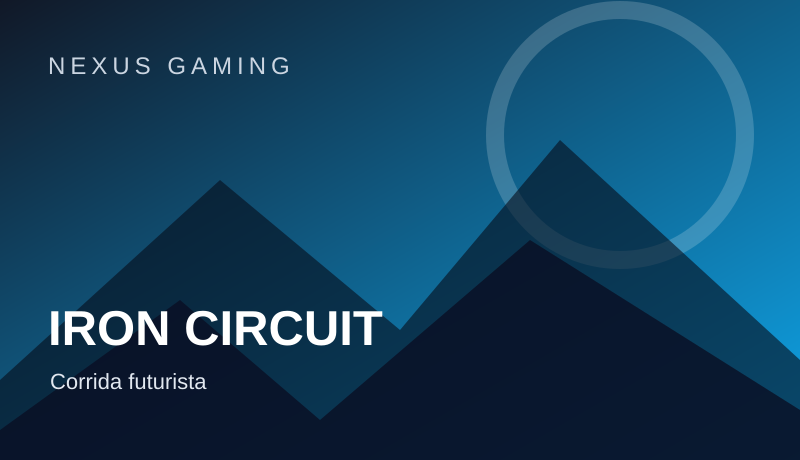

Seu universo gamer começa aqui
O próximo nível
da informação gamer.
Descubra jogos fictícios criados para demonstrar um portal editorial, explore análises, teste seus conhecimentos e salve favoritos.
Explorar notíciasPortal acadêmico: jogos, notas e notícias apresentados aqui são conteúdos demonstrativos.
Em destaque
